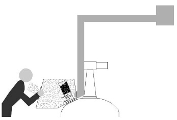
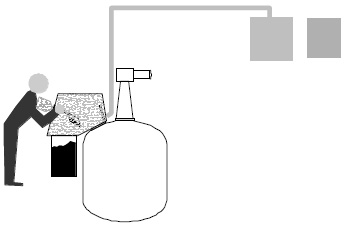
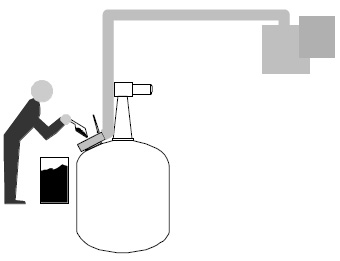
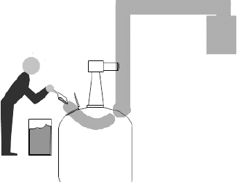
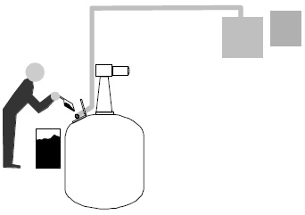
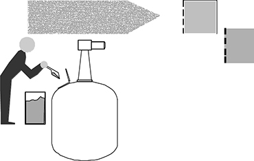

Hier sind einige Beispiele für die Ausführung von lüftungstechnischen Einrichtungen gegeben. Nur bei der integrierten Absaugung (Abb. 1) ist der Zugabebehälter Bestandteil des geschlossenen Systems. Bei den übrigen Systemen (Abb. 2–5) ist er getrennt vom geschlossenen System und Tätigkeiten wie "Zugeben" müssen in der Gefährdungsbeurteilung separat berücksichtigt werden.
Abbildung 1 zeigt das Einfüllen mit Hilfe eines geschlossenen Systems, bei dem der Zugabebehälter verschlossen an den Rührbehälter angeschlossen wird. Der Behälter wird zusätzlich mit einer Einhausung umschlossen, die Bedienung erfolgt durch eine kleine Öffnung, die zudem mit einem Handschuheingriff versehen sein kann

Abbildung 1: Integrierte Absaugung
Abbildung 2 zeigt eine integrierte Absaugung mit offenem Handling innerhalb der Absaugung.

Abbildung 2: Integrierte Absaugung mit offenem Handling im Innenraum
Bei richtiger Konstruktion hoch wirksam ist eine Randabsaugung, die dicht um die Emissionsstelle herumgeführt ist (Schlitzabsaugung, Randlochabsaugung) und einen genau angepassten Luftvolumenstrom abführt (Abbildung 3). Bei zu geringem Volumenstrom entweichen luftgetragene Gefahrstoffe, bei zu hohem Volumenstrom werden – bei hohem Dampfdruck der Behälterfüllung – erhebliche Anteile über die Abluftleitung herausgesaugt. Heftige Bewegungen, z. B. mit Säcken oder Behältern, können dazu führen, dass durch die Strömung luftgetragene Gefahrstoffe aus dem Erfassungsbereich ausbrechen. Gase und Dämpfe mit sehr kleiner Dichte können dieser Anordnung leicht entkommen, solche müssen oberhalb der Austrittstelle gefasst werden.

Abbildung 3: Hoch wirksame Randabsaugung
Durch Absaugung des Behälter-Innenraums wird an der Schüttstelle eine gezielte, in den Behälter hinein gerichtete Luftströmung erzeugt, die dafür sorgt, dass luftgetragene Gefahrstoffe nicht aus dem Behälter hinaus gelangen können, sondern mit dieser Luftströmung in den Behälter hinein transportiert werden (Abbildung 4). Durch eine geeignete Ausgestaltung der Schüttstelle kann der Erfassungsgrad dieser Absaugung noch gesteigert werden. Es ist darauf zu achten, dass der Abluftvolumenstrom so groß gewählt wird, dass die Erfassung gewährleistet ist, es andererseits mit der Abluft jedoch nicht zum Leeren des Behälters kommt, beispielsweise bei vorgelegten Flüssigkeiten mit hohem Dampfdruck.

Abbildung 4: Innen abgesaugter Behälter
Nur bei guter Auslegung und Positionierung wirksam ist eine einfache Quellenabsaugung durch ein Rohr oder einen Schlauch (Abbildung 5). Dieser muss in die unmittelbare Nähe der Emissionsstelle geführt werden, um wirksam zu sein. Bereits Handbewegungen können dazu führen, dass durch die Strömung luftgetragene Gefahrstoffe aus dem Erfassungsbereich ausbrechen. Gase und Dämpfe mit sehr kleiner Dichte können auch dieser Anordnung leicht entkommen, solche müssen oberhalb der Austrittstelle gefasst werden, z. B. mit einer Haube oder Esse.

Abbildung 5: Quellenabsaugung
Eine allgemeine Raumlüftung führt zu einer Verdünnung der ausgetretenen Gefahrstoffe in der Luft durch zutretende Frischluft (Abbildung 6). Bei geschickter Anordnung kann sie die Gefahrstoffe vom Atembereich der Beschäftigten zu einem großen Teil fortführen. Je nach Dichte der luftgetragenen Gefahrstoffe ist die Abluft im Decken- oder im Bodenbereich abzuführen.

Abbildung 6: Raumlüftung